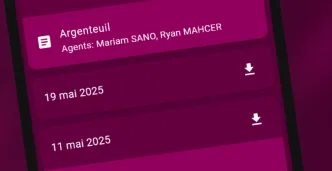
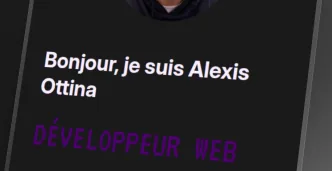
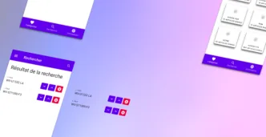
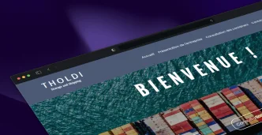
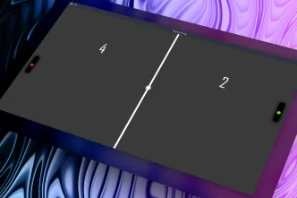
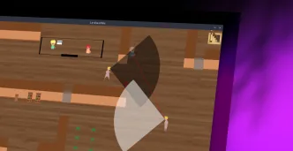

Bonjour, je suis Alexis Ottina
Développeur web
Passionné d'informatique, je développe des applications desktop,
mobile, web et des jeux vidéo.
Mon objectif est de créer et d'apprendre continuellement à travers
mes projets.
À propos
Développeur informatique depuis 2021, j'ai forgé mon expertise en
autodidacte (depuis 2012) puis par un cursus scolaire spécialisé,
principalement en web et mobile. Avec plus de 4 ans d'expérience,
j'ai pu constater que le monde du web est en constante évolution.
J'ai donc pu me construire une agilité dans ce domaine.
Si nous travaillons ensemble, vous découvrirez une personne
passionnée, qui adore donner vie à des projets numériques et
résoudre des problèmes complexes.
Skills
Dev back-end
Autres
Projets
Une sélection de mes projets, réalisés en autodidacte et issue de mon expérience professionnelle.

Rapport Secteur Argenteuil
Application mobile pour les agents de la SNCF du secteur Argenteuil.
Flutter

Portfolio
Réalisation de mon site personnel.
HTML
CSS
JS

Gestion Stock
Maquette d'une application permettant de gérer le stock d'une entreprise.
Figma

Tholdi
Site web vitrine réalisé en première année de BTS.
HTML
CSS

Super Pong
Refonte du jeu Pong originalement crée par Atari.
GML
